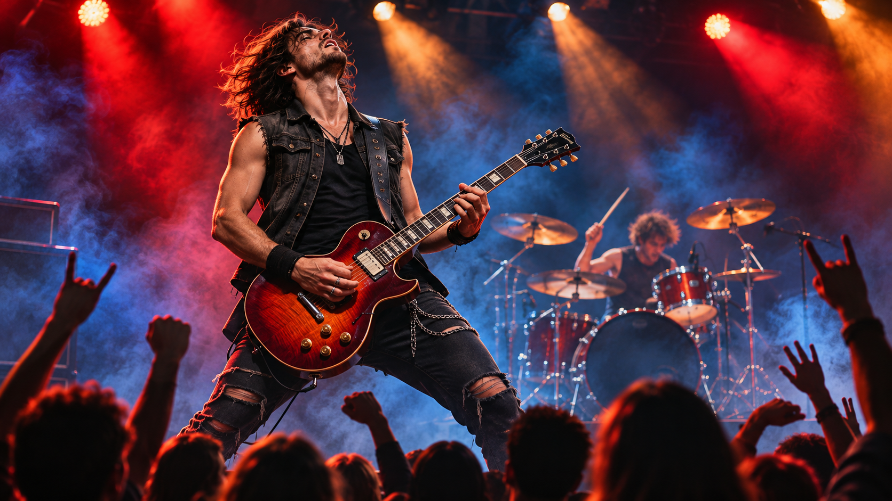

Rock: introduzione
Il rock è uno dei generi musicali più conosciuti e influenti al mondo. Nato negli Stati Uniti negli anni Cinquanta dall’incontro di blues, rhythm and blues e country, si è diffuso rapidamente grazie al suo sound energico e coinvolgente. Le chitarre elettriche, il basso e la batteria sono spesso gli strumenti protagonisti, insieme a voci intense e ritmi capaci di far partecipare il pubblico.

Nel corso degli anni il rock si è trasformato e ha dato vita a moltissimi stili: il rock and roll, l’hard rock, il punk, il rock progressivo e il rock alternativo sono solo alcuni esempi. Ogni stile ha caratteristiche diverse, ma tutti possono usare la musica per raccontare emozioni, esperienze e idee. Molte canzoni rock parlano di libertà, amicizia, cambiamenti e voglia di seguire la propria strada. Anche il modo di suonare dal vivo è importante: concerti e festival permettono a musicisti e fan di condividere la stessa energia. Nel tempo sono nate band e artisti che hanno ispirato nuove generazioni e contribuito a rinnovare il genere. Ancora oggi il rock continua a evolversi, mescolandosi con altri stili e conquistando ascoltatori di età diverse. Per molti appassionati non è soltanto musica, ma un modo speciale di esprimersi, ascoltare storie e sentirsi parte di una comunità.
- Coachella 2027: Secondo le prime anticipazioni del cartellone, SZA, Tame Impala e Dua Lipa saranno gli headliner del festival Rockol. Tra le sorprese spuntano anche i Måneskin, che appaiono a sorpresa nella lineup della kermesse californiana
- Guns N' Roses: I batteristi Frank Ferrer, Steven Adler e Matt Sorum sono al centro di un approfondimento sul ruolo e il suono dietro le pelli della storica band
- Milano Music Week 2026: Manca poco all'inizio della decima edizione (dal 16 al 22 novembre), diretta artisticamente da Linus, con un programma che spazia dai 50 anni del punk a un omaggio speciale a Ornella Vanoni
- Peter Gabriel: Il musicista è ancora impegnato nella realizzazione del film basato sul classico The Lamb Lies Down on Broadway, in vista dell'uscita del suo nuovo album *o\i* prevista per il 27 novembre
- Stray Kids: Il gruppo K-pop ha annunciato le date del nuovo Stray Kids World Tour Run che farà tappa anche in Italia